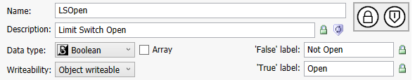
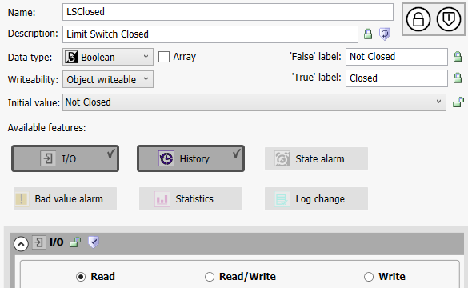
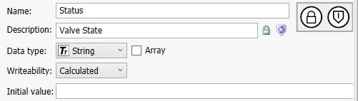
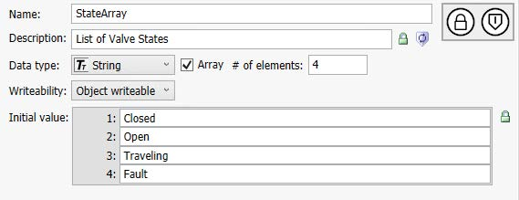
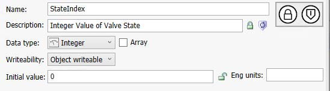
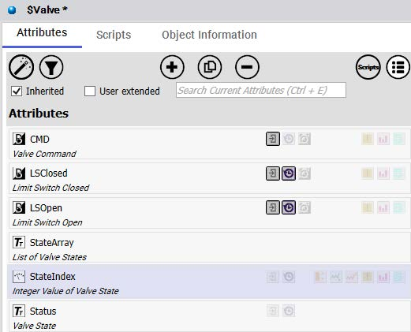
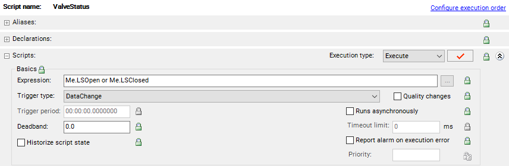
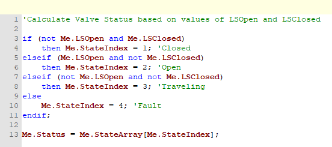
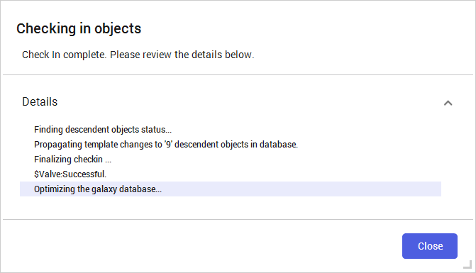

Source: AVEVA Application Server 2023 Training Manual, Module 11 — Introduction to QuickScript.NET
Covers creating a custom Automation Object ($Averager) that averages multiple input values using array variables, Declarations, and Aliases. (pages 11-51 to 11-59)
Figure 33-1 — Averager Object icon. The overlapping shapes and arrows symbolize data sources being aggregated into a calculated average value.
33.1 Introduction
Lab 24 — Creating an Averager Object
In this lab, you will create a script that will gather data using array variables, and then use declarations and aliases to calculate an average of the data.
Objectives
Upon completion of this lab, you will be able to:
Use array variables in QuickScript.NET
Use Declarations in a script
Use Aliases in a script
33.2 Create the $Averager Template
Reference: pages 11-52 to 11-53
You will create a new derived template with a new attribute and a script that makes use of both Aliases and Declarations to gather data and then calculate an average of that data.
Step 1: In the IDE, Templates tab, Application template toolset, create a new derived template from the $UserDefined template named $Averager. Step 2: Move $Averager to the Training\Project toolset. Step 3: Open the $Averager configuration editor.
33.3 Create the Average Attribute
Reference: page 11-52
Add a new attribute to the $Averager template and configure it as follows:
Property
Value
Name
Average
Data Type
Double
Writeability
Calculated
The attribute configuration interface is used to define all attributes on any object. The screenshots below show the general attribute configuration panels used throughout the platform:

Figure 33-2 — Attribute configuration panel example (Boolean type). The LSOpen attribute uses Boolean data type with Object writeable writeability and display labels for True/False states. The Average attribute is configured similarly but with Data Type set to Double instead of Boolean, and Writeability set to Calculated.

Figure 33-3 — Another attribute configuration panel example (Boolean type). The LSClosed attribute demonstrates the same configuration pattern: Name, Description, Data type, Writeability, and display labels. For the Average attribute, you configure similar fields but use the Double data type.

Figure 33-4 — Attribute configuration showing String data type with Calculated writeability. The Status attribute is configured as Calculated, meaning its value is updated only by script logic and cannot be overwritten by external writes — the same Writeability setting used for the Average attribute in this lab.

Figure 33-5 — Attribute configuration showing an array attribute. The StateArray attribute demonstrates how to configure an array by checking the Array checkbox and specifying the number of elements. Array variables are a key concept in this lab — the Average.Calculate script uses a 60-element Double array as a circular sample buffer.

Figure 33-6 — Attribute configuration showing Integer data type. The StateIndex attribute uses Integer data type with Object writeable writeability. Similarly, the Average attribute in this lab uses a numeric data type (Double) to store the calculated average value.
Note: Setting Writeability to Calculated ensures the attribute value is updated only by script execution and cannot be overwritten by external writes.
33.4 Configure the Average.Calculate Script
Reference: pages 11-53 to 11-54
33.4.1 Add the Script and Alias
Step 4: On the Scripts tab, add a new script named Average.Calculate. Step 5: Expand the Aliases area. Step 6: Click the Add Alias button to add an alias named ValueToAverage and press Enter, leaving the Reference defaulted to ---.---. Step 7: Lock and collapse the Aliases area.
Aliases provide a convenient way to reference external attributes or tags within a script. By defining an alias, you create a short name that maps to an external reference — the actual binding is configured later when the instance is created.

Figure 33-7 — Object configuration editor with the Attributes tab active. The $Averager instance editor looks similar, showing the Average attribute and inherited scripts. The attribute list displays all configured attributes with their data types, descriptions, and properties.
33.4.2 Add Declarations
Step 8: Expand the Declarations area, and then in the script body, enter the following:
' Circular sample queue to hold the values
dim sampleValues[60] as double;
dim sampleLength as integer;
' Holds the current size of the sample queue
dim sampleSize as integer;
' Index to store the next value
dim nextElementIndex as integer;
Understanding Declarations: The dim statement declares variables that are local to the script. Here, sampleValues is a 60-element array of doubles used as a circular buffer to store incoming samples.
Step 9: Lock and collapse the Declarations area. Step 10: In the Scripts area, Execution type drop-down list, verify Execute is selected, and then lock it. Step 11: In the Basics area, Trigger type drop-down list, select Periodic. Step 12: Lock the Basics area.

Figure 33-8 — Script configuration panel showing Execution type (Execute), Trigger type, and Basics area. The Average.Calculate script uses a Periodic trigger type so it runs at regular intervals. The Aliases and Declarations sections (collapsed in this view) hold the alias definitions and local variable declarations respectively.
33.4.3 Enter the Execute Script Body
Step 13: In the script body, enter the following:
' Calculate the index where the next element will be stored
' and stores the next sample value in that position.
nextElementIndex = (nextElementIndex mod sampleSize) + 1;
sampleValues[nextElementIndex] = ValueToAverage;
' Verify if the sample queue is filled or not.
if sampleLength < sampleSize then
sampleLength = sampleLength + 1;
endif;
' Calculate the average rounded to 3 decimal places,
' with the values stored in the sample queue.
dim sampleSum as double;
sampleSum = 0.0;
dim i as integer;
for i = 1 to sampleLength
sampleSum = sampleSum + sampleValues[i];
next;
Me.Average = Round(sampleSum / sampleLength, .001);
' Set the quality of the Average based on the sample queue being filled.
if sampleLength < sampleSize then
SetInitializing(Me.Average);
else;
SetGood(Me.Average);
endif;
Script Logic Breakdown:
Circular buffer:nextElementIndex wraps around using modulo arithmetic, cycling through array positions 1–60.
Sample accumulation: Each execution stores the current ValueToAverage alias value into the circular buffer.
Average calculation: Sums all stored samples and divides by the count, rounded to 3 decimal places.
Quality management: While fewer than 60 samples are collected, the quality is set to Initializing. Once the buffer is full, quality is set to Good.

Figure 33-9 — Script editor showing QuickScript code. The script body uses Me. references, conditional logic, and array indexing patterns — the same structural patterns used in the Average.Calculate script for computing rolling averages.
33.4.4 Add the OnScan Script Body
In addition to the Execute script, you need an OnScan script that initializes variables when the object comes on-scan.
Step 14: In the Execution type drop-down list, select OnScan. Step 15: In the script body, enter the following:
' Gets the size/capacity of the sample queue
sampleSize = sampleValues.GetLength(0);
' Initialized sampleLength
' This is needed to ensure that if the object goes offscan,
' the values stored in the sample queue are ignored
' when the object goes back onscan
sampleLength = 0;
Why OnScan? The OnScan script runs once when the object transitions to on-scan status. By setting sampleLength = 0, it ensures stale data from a previous off-scan period is discarded.
Step 16: Validate the script. Step 17: Save and close, and check in the object with an appropriate comment.
33.5 Checking In the Template
Reference: page 11-56
After saving the $Averager template, you must check it in to commit the changes to the Galaxy repository. The check-in process propagates template changes to descendant objects and optimizes the database.

Figure 33-10 — Check-In completion dialog. The system finds descendant objects, propagates template changes to all derived objects, finalizes the check-in, and optimizes the Galaxy database. This confirms the $Averager template has been successfully saved to the repository.
33.6 Create the Averager Instance
Reference: pages 11-56 to 11-57
Next, you will create an instance of the $Averager template and configure it to calculate the average of the Temperature_001.PV attribute.
Step 18: Create a new instance of $Averager and leave the default name (Averager_001).
Step 19: In Model view, assign Averager_001 to Mixer100.Temperature_001. Step 20: Open the Averager_001 configuration editor. Step 21: Click the Scripts tab. Step 22: In the Inherited scripts list, select Average.Calculate. Step 23: Expand Aliases, and then in the Reference field, double-click ---.---. Step 24: Replace it with myContainer.PV and press Enter.
Understanding the Alias Reference: The alias ValueToAverage was left undefined in the template. By setting the Reference to myContainer.PV, the alias now points to the PV attribute of the object's container (i.e., Mixer100.Temperature_001.PV). This is the value that will be averaged.
33.7 Configure Execution Order
Reference: pages 11-57 to 11-58
Step 25: On the Object Information tab, Execution order area, Process order drop-down list, select After. Step 26: To the right of the Relative object field, click the ellipsis button.
The Galaxy Browser appears.
Step 27: In the Galaxy Browser, Instances list, select Temperature_001. Step 28: In the Temperature_001 pane to the right, select PV. Step 29: Click OK.
When completed, the Relative object displays @Temperature_001.PV. This configuration ensures the averaging script executes after the temperature sensor's PV has been updated.
Step 30: Save and close, and check in the instance with an appropriate comment. Step 31: Deploy the Averager_001 instance.
33.8 Test in Runtime
Reference: page 11-59
Now, you will use the Object Viewer to observe the results in runtime.
Step 32: View Averager_001 in Object Viewer. Step 33: Add a new watch window, and then rename it Average. Step 34: Add the Averager_001.Average attribute to the watch window.
Note: The Quality parameter will show as 20:Initializing until enough values have been captured according to the configuration of the Averager object (60 samples). Once the circular buffer is full, the quality transitions to 0:Good.
Step 35: Save the watch window.
Important: If the quality remains in Initializing state for an extended period, verify that the OnScan script is initializing sampleLength to 0 and that the periodic trigger is firing correctly.
Optional Extension
Repeat the previous steps to add additional instances of the Averager object to other attributes, such as the remaining Temperature or Level instances.
33.9 Summary
Key Concepts Covered:
Array variables: Used dim sampleValues[60] as double to create a fixed-size circular buffer for storing sample data.
Declarations: Local variables declared with dim hold runtime state within the script (sample queue, counters, indices).
Aliases: Created a named reference (ValueToAverage) that maps to an external attribute, enabling flexible binding of input data sources.
Periodic execution: The Execute script runs on a timer, accumulating and averaging samples over time.
OnScan initialization: The OnScan script initializes variables when the object comes on-scan, ensuring clean state after off-scan periods.
Quality management: Script logic manages the quality of the computed average — Initializing while the buffer fills, Good once sufficient data is available.
Execution order: Setting Process order to After with a relative object ensures the averaging script runs after the source data is updated.
Review Questions
What is the purpose of the circular buffer pattern used in the Average.Calculate script?
Why is the sampleLength variable reset to 0 in the OnScan script?
What is the difference between a Declaration and an Alias in QuickScript.NET?
Why is the Process order set to After with a relative object of @Temperature_001.PV?
What quality value does the Average attribute report while the sample buffer is filling?
Click for Answers
The circular buffer ensures a fixed memory footprint while continuously capturing the most recent 60 samples. Older values are overwritten as new ones arrive, keeping a rolling average window.
Resetting sampleLength to 0 ensures that stale samples from a previous on-scan period are discarded when the object goes off-scan and comes back on-scan, preventing incorrect averages.
Declarations are local variables defined within the script (like dim statements) that hold intermediate values during execution. Aliases are named references to external attributes or tags that can be configured per-instance, enabling the same script to work with different data sources.
Setting Process order to After ensures the averaging script executes after the temperature sensor's PV value has been updated, so it always averages the latest data.
The quality is set to 20:Initializing (via SetInitializing) while the buffer is filling, and transitions to 0:Good (via SetGood) once the full 60 samples have been collected.
Lesson 33 — AVEVA App Server Training — Module 11: Introduction to QuickScript.NET — Lab 24